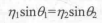

前言
这个并不是技术分享的教程类博客，只是我记录的笔记而已。不，不要误会了！（虽然溜一遍下来发现好像也能看
立方体纹理
概念
立方体纹理和之前的2D纹理不同，一共包含了6张图像对应6个面。而对于三维的立方体纹理，我们也要提供一个三维的纹理坐标表示在世界空间下的一个3D方向。这个方向从立方体中心出发，向外部延伸与6个纹理之一相交，从而得出采样结果。
使用立方体纹理的优点是实现简单快速，得到效果也很好。但是当场景引入新的物体、光源，或者物体移动时，就需要重新生成立方体纹理。除此之外，立方体纹理只可以反射环境，但不能反射使用该立方体纹理的物体本身（立方体纹理无法模拟多次反射的结果）。因此立方体纹理应该尽量对凸面体而不是凹面体使用（凹面体会反射自身）。
天空盒
天空盒是游戏中模拟背景的方法（用来模拟天空的一个盒子）。当我们使用天空盒时，整个场景就被包围在一个立方体内，而立方体每个面就是使用了立方体纹理映射技术。
在创建天空盒时，我们要把新建的Material的Shader改成Skybox/6 sided，然后把6个面所需的材质拖入Material里面（Wrap Mode设置成Clamp），防止接缝处出现不匹配的现象。另外三个参数：
Tint Color：控制该材质的整体颜色；
Exposure：调整天空盒亮度；
Rotation：调整天空盒沿+y轴方向的旋转角度
设置完后在Window->Lighting把材料拖进天空盒材质即可。
如果有摄像机要使用不同的天空盒，就可以向该摄像机添加Skybox组件覆盖掉之前的设置。
环境映射
通过环境映射可以模拟出金属质感的材质。
创建用于环境映射的立方体纹理有三种方法：1.直接由一些特殊布局的纹理创建；2.手动创建Cubemap资源再赋6张图；3.由脚本生成。
第一种方法只需要提供一张具有特殊布局的纹理，然后把该纹理的Text Type设置为Cubemap就行，后面Unity会全部搞定；
第二种方法是Unity5之前的方法，也需要准备6张纹理；
前两种方法需要提供图像，而且得到的立方体纹理被场景内所有物体通用，无法随着位置改变而改变。而第三种通过Unity内置的Camera.RenderToCubemap函数实现：
using UnityEngine;
using UnityEditor;
using System.Collections;
public class RenderCubemapWizard : ScriptableWizard {
public Transform renderFromPosition;
public Cubemap cubemap;
void OnWizardUpdate () {
helpString = "Select transform to render from and cubemap to render into";
isValid = (renderFromPosition != null) && (cubemap != null);
}
void OnWizardCreate () {
//创建一个摄像机
GameObject go = new GameObject( "CubemapCamera");
go.AddComponent<Camera>();
//把它放在用户指定的位置上
go.transform.position = renderFromPosition.position;
// 把从该位置观察到的场景图像存储到6张图像，并渲染到用户指定的立方体纹理cubemap里
go.GetComponent<Camera>().RenderToCubemap(cubemap);
//销毁摄像机
DestroyImmediate( go );
}
[MenuItem("GameObject/Render into Cubemap")]
static void RenderCubemap () {
ScriptableWizard.DisplayWizard<RenderCubemapWizard>(
"Render cubemap", "Render!");
}
}**Camera.RenderToCubemap(Cubemap)**：把从任意位置观察到的场景图像存储到6张图像种，从而创建出该位置上对应的立方体纹理。
通过这个脚本，我们只需要新建一个空物体和一个立方体纹理（面板勾选Readable），在Unity菜单栏里选择GameObject->Render into Cubemap，把两个拖进去点Render！就行了（前提是要创建上面这个脚本）。
Face size：设置Cubemap大小，值越大立方体纹理分辨率越大，效果可能更好，但占用内存也越大。
反射
原理是通过入射光线的方向和表面法线方向来计算反射方向，再利用反射方向对立方体纹理采样即可。
Shader "Custom/Reflection"
{
Properties{
_Color("Color Tint",Color)=(1,1,1,1)
_ReflectColor("Reflection Color",Color)=(1,1,1,1)
//控制反射颜色
_ReflectAmount("Reflect Amount",Range(0,1))=1
//控制这个材质的反射程度
_Cubemap("Reflection Cubemap",Cube)="_Skybox"{}
//模拟反射的环境映射纹理（立方体纹理）
}
SubShader{
Tags { "RenderType"="Opaque" "Queue"="Geometry"}
pass{
Tags {"LightMode"="ForwardBase"}
CGPROGRAM
fixed4 _Color;
fixed4 _ReflectColor;
float _ReflectAmount;
samplerCUBE _Cubemap;
#include "AutoLight.cginc"
#include "Lighting.cginc"
#pragma multi_compile_fwdbase
#pragma vertex vert
#pragma fragment frag
struct a2v{
float4 vertex:POSITION;
float3 normal:NORMAL;
};
struct v2f{
float4 pos:SV_POSITION;
float3 worldNormal:TEXCOORD0;
float3 worldPos:TEXCOORD1;
float3 worldViewDir:TEXCOORD2;
float3 worldRefl:TEXCOORD3;
SHADOW_COORDS(4)
};
v2f vert(a2v v){
v2f o;
o.pos=UnityObjectToClipPos(v.vertex);
o.worldNormal=UnityObjectToWorldNormal(v.normal);
o.worldPos=mul(unity_ObjectToWorld,v.vertex).xyz;
o.worldViewDir=UnityWorldSpaceViewDir(o.worldPos);
o.worldRefl=reflect(-o.worldViewDir,o.worldNormal);
//计算反射方向
TRANSFER_SHADOW(o);
return o;
}
fixed4 frag(v2f i):SV_TARGET{
fixed3 worldNormal=normalize(i.worldNormal);
fixed3 worldLightDir=normalize(UnityWorldSpaceLightDir(i.worldPos));
fixed3 worldViewDir=normalize(i.worldViewDir);
fixed3 ambient=UNITY_LIGHTMODEL_AMBIENT.xyz;
fixed3 diffuse=_LightColor0.rgb*_Color.rgb*max(0,dot(worldNormal,worldLightDir));
fixed3 reflection=texCUBE(_Cubemap,i.worldRefl).rgb*_ReflectColor.rgb;
//利用反射方向对立方体纹理进行采样（使用_Cubemap）
UNITY_LIGHT_ATTENUATION(atten,i,i.worldPos);
fixed3 color=ambient+lerp(diffuse,reflection,_ReflectAmount)*atten;
//使用lerp和_ReflectAmount混合漫反射颜色与反射颜色
return fixed4(color,1.0);
}
ENDCG
}
}
Fallback"Reflective/VertexLit"
}折射
折射就是，当光线从一类介质斜射入另一种介质时，传播方向一般会发生改变。而改变的规律可以使用斯涅尔定律：

其中两个η是两个介质的折射率，两个角是入射方向、反射方向分别与法线方向的夹角。、
当光线穿过透明物体的两个表面时，我们原则只计算一次折射（因为模拟一次得到的效果看起来也是那么回事）。
Shader "Custom/Refraction"
{
Properties
{
_Color ("Color Tint", Color) = (1,1,1,1)
_RefractColor("Refraction Color",Color)=(1,1,1,1)
_RefractAmount("Refraction Amount",Range(0,1))=1
_RefractRatio("Refraction Ratio",Range(0.1,1))=0.5
_Cubemap("Refraction Cubemap",Cube)="_Skybox"{}
}
SubShader
{
Tags { "RenderType"="Opaque" "Queue"="Geometry"}
pass{
Tags{"LightMode"="ForwardBase"}
CGPROGRAM
fixed4 _Color;
fixed4 _RefractColor;
float _RefractAmount;
float _RefractRatio;
samplerCUBE _Cubemap;
#pragma multi_compile_fwdbase
#pragma vertex vert
#pragma fragment frag
#include "Lighting.cginc"
#include "AutoLight.cginc"
struct a2v{
float4 vertex:POSITION;
float3 normal:NORMAL;
};
struct v2f{
float4 pos:SV_POSITION;
float3 worldNormal:TEXCOORD0;
float3 worldPos:TEXCOORD1;
float3 worldViewDir:TEXCOORD2;
float3 worldRefr:TEXCOORD3;
SHADOW_COORDS(4)
};
v2f vert(a2v v){
v2f o;
o.pos=UnityObjectToClipPos(v.vertex);
o.worldNormal=UnityObjectToWorldNormal(v.normal);
o.worldPos=mul(unity_ObjectToWorld,v.vertex).xyz;
o.worldViewDir=UnityWorldSpaceViewDir(o.worldPos);
//计算折射方向
o.worldRefr=refract(-normalize(o.worldViewDir),normalize(o.worldNormal),_RefractRatio);
TRANSFER_SHADOW(o);
return o;
}
fixed4 frag(v2f i):SV_TARGET{
fixed3 worldNormal=normalize(i.worldNormal);
fixed3 worldLightDir=normalize(UnityWorldSpaceLightDir(i.worldPos));
fixed3 worldViewDir=normalize(UnityWorldSpaceViewDir(i.worldViewDir));
fixed3 ambient=UNITY_LIGHTMODEL_AMBIENT;
fixed3 diffuse=_LightColor0.rgb*_Color.rgb*max(0,dot(worldNormal,worldLightDir));
fixed3 refraction=texCUBE(_Cubemap,i.worldRefr).rgb*_RefractColor.rgb;
//使用折射方向对立方体纹理进行采样
UNITY_LIGHT_ATTENUATION(atten,i,i.worldPos);
fixed3 color=ambient+lerp(diffuse,refraction,_RefractAmount)*atten;
return fixed4(color,1.0);
}
ENDCG
}
}
Fallback"Reflective/VertexLit"
}refract：第一个参数是入射光线方向（必须归一化矢量），第二个参数是表面法线（必须归一化矢量），第三个参数是两个介质折射率的比值。
菲涅尔反射
事实上，当光线与介质相碰时，折射与反射是按一定比率关系同时发生的，而这个可以使用菲涅尔等式进行计算。真实世界的菲涅尔等式十分复杂，所以我们通常使用一些近似公式计算。比如Schlick菲涅尔近似等式：
$$F_{Schlick}(v,n)=F_0+(1-F_0)(1-v*n)^5$$
其中F0是反射西师，控制菲涅尔反射强度，v是视角方向，n是表面法线。
以及Emprical菲涅尔近似等式：
$$ F_{Empricial}(v,n)=max(0,min(1,bias+scal*(1-v*n)^{power}))$$
其中scal,power,bias全是控制项。
以下是通过Schlick菲涅尔近似等式模拟的菲涅尔反射：
Shader "Custom/Fresnel"
{
Properties
{
_Color ("Color", Color) = (1,1,1,1)
_FresnelScale("Fresnel Scale",Range(0,1))=0.5
_Cubemap("Reflection Cubemap",Cube)="_Skybox"{}
}
SubShader
{
Tags { "RenderType"="Opaque" "Queue"="Geometry"}
pass{
Tags{"LightMode"="ForwardBase"}
CGPROGRAM
#pragma vertex vert
#pragma fragment frag
#pragma multi_compile_fwdbase
#include "Lighting.cginc"
#include "AutoLight.cginc"
fixed4 _Color;
float _FresnelScale;
samplerCUBE _Cubemap;
struct a2v{
float4 vertex:POSITION;
float3 normal:NORMAL;
};
struct v2f{
float4 pos:SV_POSITION;
float3 worldNormal:TEXCOORD0;
float3 worldPos:TEXCOORD1;
float3 worldViewDir:TEXCOORD2;
float3 worldRefl:TEXCOORD3;
SHADOW_COORDS(4)
};
v2f vert(a2v v){
v2f o;
o.pos=UnityObjectToClipPos(v.vertex);
o.worldNormal = UnityObjectToWorldNormal(v.normal);
o.worldPos=mul(unity_ObjectToWorld,v.vertex).xyz;
o.worldViewDir=UnityWorldSpaceViewDir(o.worldPos);
o.worldRefl=reflect(-o.worldViewDir,o.worldNormal);
TRANSFER_SHADOW(o);
return o;
}
fixed4 frag(v2f i):SV_TARGET{
fixed3 worldNormal=normalize(i.worldNormal);
fixed3 worldLightDir=normalize(UnityWorldSpaceLightDir(i.worldPos));
fixed3 worldViewDir=normalize(i.worldViewDir);
fixed3 ambient=UNITY_LIGHTMODEL_AMBIENT;
UNITY_LIGHT_ATTENUATION(atten,i,i.worldPos);
fixed3 reflection=texCUBE(_Cubemap,i.worldRefl).rgb;
fixed fresnel=_FresnelScale+(1-_FresnelScale)*pow(1-dot(worldViewDir,worldNormal),5);
//计算菲涅尔反射
fixed3 diffuse=_LightColor0.rgb*_Color.rgb*max(0,dot(worldNormal,worldLightDir));
fixed3 color=ambient+lerp(diffuse,reflection,saturate(fresnel))*atten;
//将结果混合
return fixed4(color,1.0);
}
ENDCG
}
}
FallBack "Reflective/VertexLit"
}渲染纹理
概念
多重渲染目标（MRT）使GPU允许我们把场景同时渲染到多个渲染目标纹理中，而不用为每个渲染目标纹理单独渲染完整的场景。
Unity为渲染目标纹理定义了一种专门的纹理类型——渲染纹理。使用它的方式有如下两种方法：
1.创建一个渲染纹理，并把一个摄像机的渲染目标设置成该渲染纹理。这样的话，摄像机的渲染结果会实时更新到渲染纹理中，而不是显示在屏幕上；
2.在屏幕后处理时使用GrabPass命令或OnRenderImage函数获取当前的屏幕图像。这样Unity会把该屏幕图像放到一张与屏幕分辨率等同的渲染纹理中，从而在自定义的Pass中当成普通的纹理来处理。
镜子效果
Shader "Custom/Mirror"
{
Properties
{
_MainTex ("Main Tex", 2D) = "white" {}
}
SubShader
{
Tags { "RenderType"="Opaque" "Queue"="Geometry"}
pass{
CGPROGRAM
#pragma vertex vert
#pragma fragment frag
sampler2D _MainTex;
struct a2v {
float4 vertex : POSITION;
float3 texcoord : TEXCOORD0;
};
struct v2f {
float4 pos : SV_POSITION;
float2 uv : TEXCOORD0;
};
v2f vert(a2v v){
v2f o;
o.pos=UnityObjectToClipPos(v.vertex);
o.uv=v.texcoord;
o.uv.x=1-o.uv.x;
//由于镜子是反向的，所以纹理的uv中x也要反向
return o;
}
fixed4 frag(v2f i):SV_TARGET{
return tex2D(_MainTex,i.uv);
//对纹理采样完就可以输出
}
ENDCG
}
}
FallBack Off
}代码本身很简单，只是使用一个渲染纹理作为输入属性，并把它水平翻转后直接显示到物体上。
但与此同时我们还要：
1.创建一个渲染纹理（Render Texture），并且把它挂载到摄像机的Target Texture上；
2.再把这个渲染纹理挂载到material上。
玻璃效果
GrabPass：当我们在Shader内定义了它后，Unity会把当前屏幕的图像绘制在一张纹理中，以便我们在后续的Pass访问。使用GrabPass可以让我们对该物体后面的图像进行更复杂的处理，比如对透明物体的渲染。
使用GrabPass需要额外小心物体的渲染队列设置：尽管代码内不包含混合指令，但仍然要把物体的渲染队列设置成透明（Tags{“Queue”=“Transparent”}），从而保证在渲染时，所有的不透明物体已经被绘制在屏幕上，从而获取正确的屏幕图像。
以下代码来模拟一个玻璃效果。基本思路是：使用一张法线纹理修改模型的法线信息（凹凸纹理），再使用上文反射方法，通过一个Cubemap实现模拟玻璃的反射。而Cubemap使用GrabPass获取玻璃后面的屏幕图像，并使用切线空间下的法线对屏幕纹理坐标偏移后，再对屏幕图像进行采样来模拟近似的折射效果。
Shader "Custom/GlassRefraction"
{
Properties
{
_MainTex("Main Tex",2D)="white"{}
//玻璃的材质纹理
_BumpMap("Normal Map",2D)="bump"{}
//玻璃的法线纹理
_Cubemap("Environment Cubemap",Cube)="_Skybox"{}
//模拟反射的环境纹理
_Distortion("Distortion",Range(0,100))=10
//控制模拟折射时图像的扭曲程度
_RefractAmount("Refract Amount",Range(0.0,1.0))=1.0
//折射程度，为0时只有反射，1时只有折射
}
SubShader
{
Tags {"Queue"="Transparent" "RenderType"="Opaque"}
GrabPass{"_RefractionTex"}
//定义一个抓取屏幕图像的Pass，并存在名为_RefractionTex的纹理中
pass{
CGPROGRAM
#pragma vertex vert
#pragma fragment frag
#include "UnityCG.cginc"
sampler2D _MainTex;
float4 _MainTex_ST;
sampler2D _BumpMap;
float4 _BumpMap_ST;
samplerCUBE _Cubemap;
float _Distortion;
fixed _RefractAmount;
sampler2D _RefractionTex;
//由于之前采样了，所以也要在这里声明纹理
float4 _RefractionTex_TexelSize;
//这样命名得到纹理的纹素大小，对纹理坐标进行偏移时使用该变量
struct a2v{
float4 vertex:POSITION;
float4 normal:NORMAL;
float4 tangent:TANGENT;
float texcoord:TEXCOORD0;
};
struct v2f{
float4 pos:SV_POSITION;
float4 scrPos:TEXCOORD0;
float4 uv:TEXCOORD1;
float4 TtoW0:TEXCOORD2;
float4 TtoW1:TEXCOORD3;
float4 TtoW2:TEXCOORD4;
};
v2f vert(a2v v){
v2f o;
o.pos=UnityObjectToClipPos(v.vertex);
o.scrPos=ComputeGrabScreenPos(o.pos);
//得到被抓取的屏幕图像的采样坐标
o.uv.xy=TRANSFORM_TEX(v.texcoord,_MainTex);
o.uv.zw=TRANSFORM_TEX(v.texcoord,_BumpMap);
//计算采样坐标，并存储到uv的xy和zw分量内
float3 worldPos=mul(unity_ObjectToWorld,v.vertex).xyz;
fixed3 worldNormal=UnityObjectToWorldNormal(v.normal);
fixed3 worldTangent=UnityObjectToWorldDir(v.tangent.xyz);
fixed3 worldBinormal=cross(worldNormal,worldTangent)*v.tangent.w;
o.TtoW0=float4(worldTangent.x,worldBinormal.x,worldNormal.x,worldPos.x);
o.TtoW1=float4(worldTangent.y,worldBinormal.y,worldNormal.y,worldPos.y);
o.TtoW2=float4(worldTangent.z,worldBinormal.z,worldNormal.z,worldPos.z);
//计算切线空间变换到世界空间的变换矩阵，并把每一行存储到上面三个分量中，w轴被拿来存储世界空间下的顶点坐标
return o;
}
fixed4 frag:SV_TARGET{
float3 worldPos=float3(i.TtoW0.w,i.TtoW1.w,i.TtoW2.w);
//得到世界坐标
fixed3 worldViewDir=normalize(UnityWorldSpaceViewDir(worldPos));
//通过世界坐标得到视角方向
fixed3 bump=UnpackNormal(tex2D(_BumpMap,i.uv.zw));
//采样并获得切线空间下的法线方向
float2 offset=bump.xy*_Distortion*_RefractionTex_TexelSize.xy;
//对屏幕图像的采样坐标进行偏移，模拟折射效果
i.scrPos.xy=offset+i.scrPos.xy;
//加上偏移值，得到偏移效果
fixed3 refrCol=tex2D(_RefractionTex,i.scrPos.xy/i.srcPos.w).rgb;
//对acrPos透视除法得到真正的屏幕坐标进行采样
bump=normalize(half3(dot(i.TtoW0.xyz,bump),dot(i.TtoW1.xyz,bump),dot(i.TtoW2.xyz,bump)));
//将法线方向从切线空间变换到世界空间下
fixed3 reflDir=reflect(-worldViewDir,bump);
//计算视角方向相对于法线方向的反射方向
fixed4 texColor=tex2D(_MainTex,i.uv.xy);
//得到颜色
fixed3 reflCol=texCUBE(_Cubemap,reflDir).rgb*texColor.rgb;
//结果与主纹理颜色相乘后得到反射颜色
fixed3 finalColor=reflCol*(1-_RefractAmount)+refrCol*_RefractAmount;
//将反射和折射颜色混合，作为最终的输出颜色
return fixed4(finalColor,1);
}
ENDCG
}
}
FallBack "Diffuse"
}ComputeGrabScreenPos：得到对应被抓取的屏幕图像的采样坐标
GrabPass：支持两种形式：
1.**GrabPass{ }**：在后续Pass中直接使用_GrabTexture访问屏幕图像，但是当场景中有多个物体以这种形式抓取屏幕时，这种方法消耗新跟那个较大。但这个方法可以让每个物体得到不同的屏幕图像，这取决于它们的渲染队列以及渲染它们时当前的屏幕缓冲中的颜色；
2.**GrabPass{ “TextureName”}**：即上文代码的形式，可以在后续Pass中使用TextureName访问屏幕图像。虽然也可以抓取屏幕，但只会在每一帧为第一个使用该名称的纹理的物体执行一次抓取屏幕的操作。该方法更为高效，但也意味着所有物体都会使用同一张屏幕图像。
总结
虽然GrabPass和额外摄像机的方式都可以抓取屏幕图像，但相比之下：
GrabPass更为简单，只要几行代码就可以实现抓取屏幕的目的。但渲染纹理效率更高。使用该纹理我们可以自定义渲染纹理的大小，而GrabPass获取的图像分辨率和显示屏幕是一致的。而且在移动设备上需要cpu直接读取后背i缓冲的数据，比较耗时，破坏了CPU和GPU的并行性。
程序纹理
概念
指那些由计算机（C#代码）生成的图像，使用一些特定的算法来创建个性化图案或者非常真实的自然元素。我们可以使用各种参数调试纹理的外观，从而得到更加丰富的动画和视觉效果。
简单程序纹理
使用算法生成一个波点纹理：
using UnityEngine;
using System.Collections;
using System.Collections.Generic;
[ExecuteInEditMode]
public class ProceduralTextureGeneration : MonoBehaviour {
public Material material = null;
#region Material properties
[SerializeField]
private int m_textureWidth = 512;
public int textureWidth {
get {
return m_textureWidth;
}
set {
m_textureWidth = value;
_UpdateMaterial();
}
}
[SerializeField]
private Color m_backgroundColor = Color.white;
public Color backgroundColor {
get {
return m_backgroundColor;
}
set {
m_backgroundColor = value;
_UpdateMaterial();
}
}
[SerializeField]
private Color m_circleColor = Color.yellow;
public Color circleColor {
get {
return m_circleColor;
}
set {
m_circleColor = value;
_UpdateMaterial();
}
}
[SerializeField]
private float m_blurFactor = 2.0f;
public float blurFactor {
get {
return m_blurFactor;
}
set {
m_blurFactor = value;
_UpdateMaterial();
}
}
#endregion
private Texture2D m_generatedTexture = null;
// Use this for initialization
void Start () {
if (material == null) {
Renderer renderer = gameObject.GetComponent<Renderer>();
if (renderer == null) {
Debug.LogWarning("Cannot find a renderer.");
return;
}
material = renderer.sharedMaterial;
}
_UpdateMaterial();
}
private void _UpdateMaterial() {
if (material != null) {
m_generatedTexture = _GenerateProceduralTexture();
material.SetTexture("_MainTex", m_generatedTexture);
}
}
private Color _MixColor(Color color0, Color color1, float mixFactor) {
Color mixColor = Color.white;
mixColor.r = Mathf.Lerp(color0.r, color1.r, mixFactor);
mixColor.g = Mathf.Lerp(color0.g, color1.g, mixFactor);
mixColor.b = Mathf.Lerp(color0.b, color1.b, mixFactor);
mixColor.a = Mathf.Lerp(color0.a, color1.a, mixFactor);
return mixColor;
}
private Texture2D _GenerateProceduralTexture() {
Texture2D proceduralTexture = new Texture2D(textureWidth, textureWidth);
// The interval between circles
float circleInterval = textureWidth / 4.0f;
// The radius of circles
float radius = textureWidth / 10.0f;
// The blur factor
float edgeBlur = 1.0f / blurFactor;
for (int w = 0; w < textureWidth; w++) {
for (int h = 0; h < textureWidth; h++) {
// Initalize the pixel with background color
Color pixel = backgroundColor;
// Draw nine circles one by one
for (int i = 0; i < 3; i++) {
for (int j = 0; j < 3; j++) {
// Compute the center of current circle
Vector2 circleCenter = new Vector2(circleInterval * (i + 1), circleInterval * (j + 1));
// Compute the distance between the pixel and the center
float dist = Vector2.Distance(new Vector2(w, h), circleCenter) - radius;
// Blur the edge of the circle
Color color = _MixColor(circleColor, new Color(pixel.r, pixel.g, pixel.b, 0.0f), Mathf.SmoothStep(0f, 1.0f, dist * edgeBlur));
// Mix the current color with the previous color
pixel = _MixColor(pixel, color, color.a);
}
}
proceduralTexture.SetPixel(w, h, pixel);
}
}
proceduralTexture.Apply();
return proceduralTexture;
}
}因为是脚本创建的，所以我们可以直接在窗口内通过调整脚本的变量数值进而调整生成的程序纹理。
- 本文链接：https://karmotrine.fun/2022/01/16/Unity-Shader05%E2%80%94%E2%80%94%E9%AB%98%E7%BA%A7%E7%BA%B9%E7%90%86/
- 版权声明：本博客所有文章除特别声明外，均默认采用 许可协议。
若没有本文 Issue，您可以使用 Comment 模版新建。